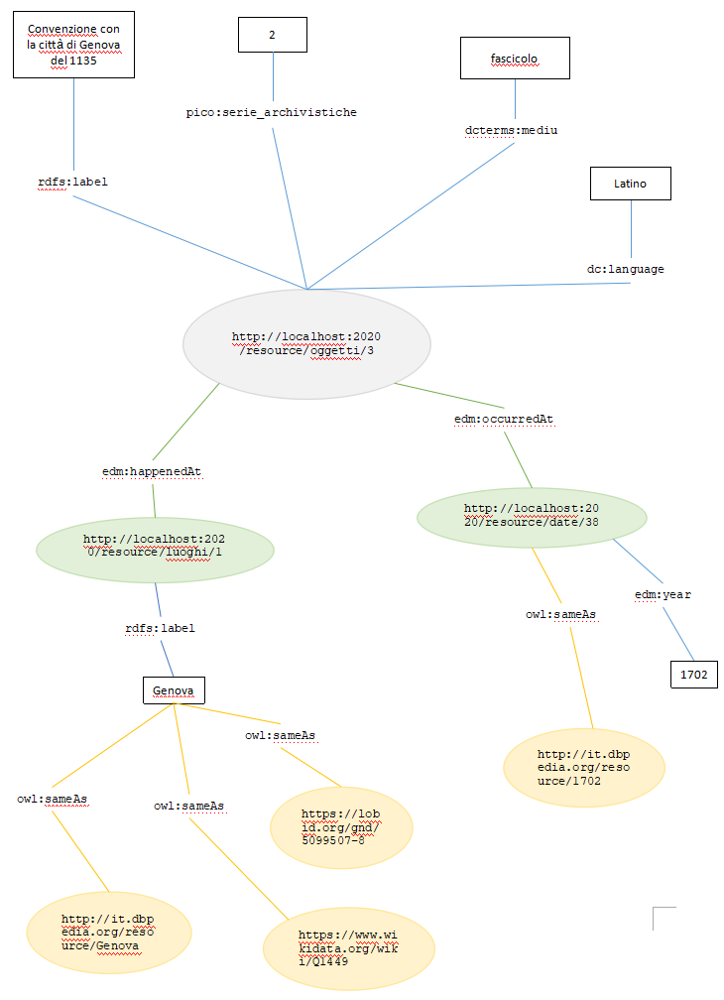

Fondo antico del Comune di Novi Ligure
Il Fondo raccoglie al suo interno tutta la documentazione archivistica riferibile all'attività della comunità novese
dal 1495 fino al periodo della dominazione francese (fino a tutto l'anno 1799) e anche altre carte dal 1800 al 1811.
Le unità documentarie dell'archivio sono state estratte dal sistema
Mèmora, una piattaforma digitale pubblica, per la descrizione
del patrimonio culturale di archivi, istituti culturali e musei, realizzata da CSI Piemonte.
Il Fondo appartiene all’archivio storico del Comune di Novi Ligure ed è classificato nella piattaforma Mèmora all'interno della cartella
“Archivi e patrimonio documentale” del Comune.
In totale, il Fondo contiene 3 sezioni, 70 serie, 83 sottoserie e un totale di 1641 unità (schede documentarie)
che coprono un periodo che va dagli inizi del 1500 fino al 1870.
Il lavoro di conversione dei dati in Linked Open Data
è stato eseguito sulla prima sezione del fondo, intitolata
Atti, registri, titoli e carte riflettenti all'era antica fino a tutto l'anno 1799, che contiene 18 serie e 223 unità
che coprono il periodo 1135/1495 - 1799.
Il Fondo antico del comune di Novi Ligure
Risorse
Dal Fondo sono state estratte le seguenti risorse:
- Oggetti, cioè le unità archivistiche.
- Persone relative ad un oggetto.
- Luoghi cui l'oggetto si riferisce.
- Date cui l'oggetto si riferisce, modellate anche come giorni, mesi e anni.
Collegamenti interni
Ogni oggetto può avere uno o più link interi a persone, luoghi e date correlate.
Collegamenti esterni
Il Fondo contiene collegamenti esterni ai seguenti dataset
- Oggetti: DBpedia (it)
- Persone: DBpedia (it), GND e VIAF
- Luoghi: DBpedia (it), GND e Wikidata (en)
- Date: DBpedia (it)
Ontologia
Per la rappresentazione dei dati sono state utilizzate i seguenti vocabolari e ontologie:
- Europeana Data Model ontology (EDM)
- PICO Thesaurus
- Basic Geo Vocabulary
- Web Ontology Language (OWL)
- SKOS
- FOAF
- Dublin Core
- RDF Schema
Sono stati utilizzati le seguenti classi e proprietà:
Per le risorse "luoghi":
- dc:coverage, edm:Place come classi per definire i luoghi.
- dcterms:spatial, geo:lat, geo:long, per la rappresentazione di coordinate spaziali.
- edm:happenedAt per gli oggetti che fanno riferimento ad un luogo
- pico:beni_archivistici come classe per gli oggetti
- pico:serie_archivistiche la proprietà "numero di serie d'appartenenza nell'archivio" degli oggetti
- dcterms:medium come proprietà "consistenza fisica" degli oggetti
- dc:language per la proprietà "lingua" degli oggetti
- foaf:person come classe per le persone
- foaf:name per la proprietà "nome" delle persone
- skos:related per gli oggetti che fanno riferimento ad una persona
- dc:date, edm:year, edm:month, edm:day, come classe e proprietà per la rappresentazione delle date.
- dcterms:temporal, edm:begin, edm:end, per gli intervalli temporali.
- edm:hasType per la rappresentazione del tipo di data
- edm:occurredAt per gli oggetti che fanno riferimento ad una data.
- dc:identifier per gli identificatri univoci delle risorse
- skos:prefLabel, rdfs:label come etichette human readable
- owl:sameAs per i link ai dataset esterni (URI che ri riferiscono alla stessa risorsa)

Esempi di risorse rappresentate secondo i modelli ontologici di riferimento.
Dataset
Il fondo viene fornito come Linked Data node, implementato tramite un server D2R.
Accedi al dataset
- SPARQL endpoint
- Dump in formato RDF/XML
- Dump in formato N-TRIPLE
- Dump in formato TURTLE
Esempi
Esempi di risorse da consultare nel dataset LOD:
- Pietro Strozzi (persona)
- Genova (luogo)
- 1799 (data)
- Raccolta di atti antichi (oggetto)
Esempi di query SPARQL
- Tutte le unità archivistiche in latino:
SELECT ?oggetti WHERE { ?oggetti dc:language "Latino" .}
About
Questo sito e il dataset pubblicato come Linked Open Data sono stati creati da Diletta Goglia come progetto di tesi di laurea triennale in Informatica Umanistica all'Università degli Studi di Pisa.
- Relatore: Andrea Marchetti, IIT - CNR - Istituto Informatica e Telematica
- Correlatori:
- Entica Salvatori, Dipartimento di Civiltà e Forme del Sapere, Università di Pisa
- Angelica Lo Duca, IIT - CNR - Istituto Informatica e Telematica
- Vittore Casarosa, ISTI - CNR - Istituto di Scienza e Tecnologie dell’Informazione